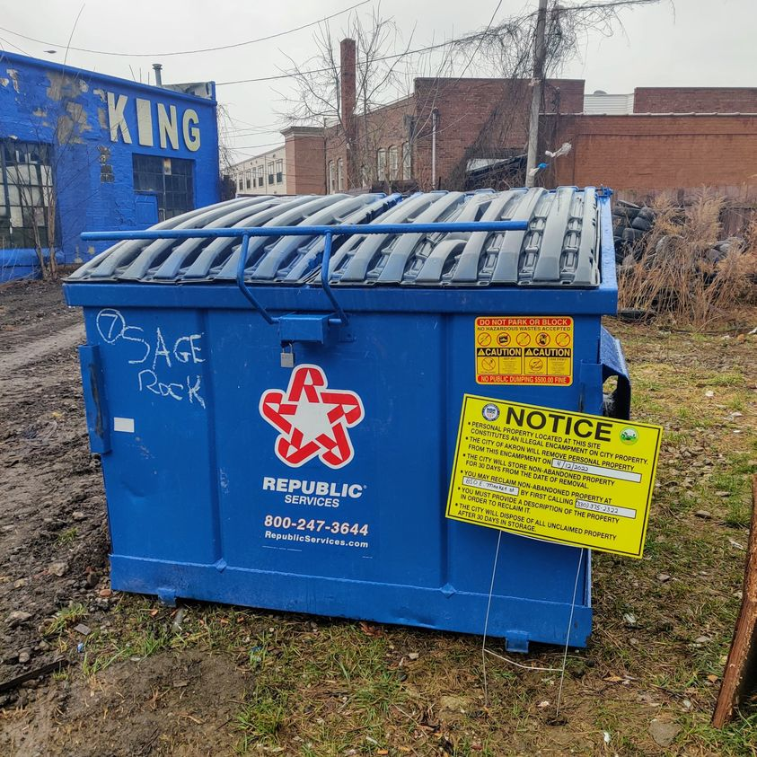

Timeline photos
Does anyone have space for me to put my dumpster?
The city of Akron is FURIOUS! that it is on their land. They told Republic that if it isn't gone today they will confiscate it.
I could probably haul my trash just about anywhere, within reason.
If you have a potential space could you please consider letting me put it there.
I use this dumpster to pick up trash of homeless people.
Thank you.